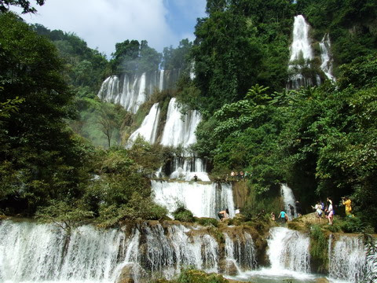
น้ำตกทีลอซู
น้ำตกทีลอซู เป็นน้ำตกที่ตั้งอยู่ในเขตรักษาพันธุ์สัตว์ป่าอุ้มผาง อำเภออุ้มผาง จังหวัดตาก
ห่างจากที่ทำการเขตฯ 3 กิโลเมตรมีลักษณะเป็นน้ำตกภูเขาหินปูนขนาดใหญ่ ตั้งอยู่บนความสูงจากระดับน้ำทะเล 900 เมตร เกิดจากลำห้วยกล้อท้อ ลำน้ำทั้งสายตกลงสู่หน้าผาสูงชัน มีน้ำไหลแรงตลอดปี
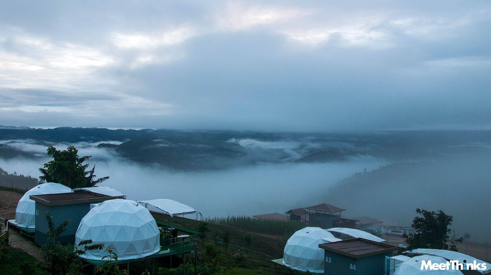
ดอยป่าหวาย
ดอยป่าหวาย อยู่ในอำเภอพบพระ จังหวัดตาก เป็น จุดเช็คอินแห่งใหม่ ของอำเภอพบพระ คือทะเลหมอกดอยป่าหวาย อยู่ที่บ้านป่าหวาย ชม ธรรมชาติความสวยงาม ของทะเลหมอก
alt="" />
ดอยสุเทพ
ดอยสุเทพ เป็นภูเขาสำคัญตั้งอยู่ทางทิศตะวันตกของตัวเมืองเชียงใหม่ อยู่ในพื้นที่อุทยานแห่งชาติดอยสุเทพ-ปุย
และยังเป็นที่ตั้งของวัดพระธาตุดอยสุเทพราชวรวิหาร ภายในวัดมีพระธาตุดอยสุเทพเป็นพระเจดีย์สีทอง ด้านในพระเจดีย์บรรจุพระบรมสารีริกธาตุของสมเด็จพระสัมมาสัมพุทธเจ้า
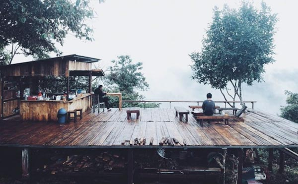 alt="" />
ดูเลเล
ดูเลเลบ้านแห่งความคิดถึงที่พักพูลวิลล่ากลางหุบเขา ตั้งอยู่ อ.แม่แตง จ.เชียงใหม่
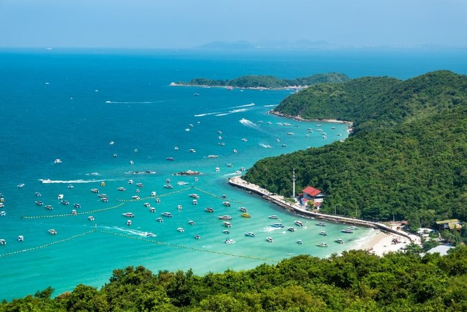 alt="" />
เกาะล้าน
เกาะล้าน เป็นแขวงหนึ่งในเมืองพัทยา จังหวัดชลบุรี โดยเป็นเกาะขนาด 4.7 ตารางกิโลเมตร กลางอ่าวไทย
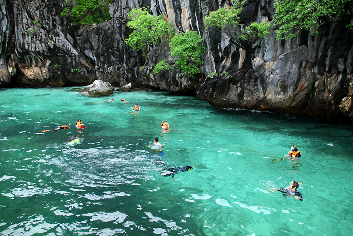 alt="" />
ถ้ำมรกต
ถ้ำมรกตอันล้ำค่าแห่งอันดามัน” เป็นเกาะที่ใหญ่เป็นอันดับที่ 3 ของท้องทะเลตรัง
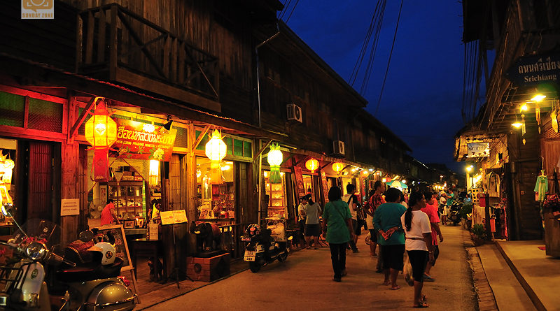 alt="" />
เชียงคาน
เชียงคาน เมืองที่ยังคงความสวยงามด้วยสถาปัตยกรรมโบราณดั้งเดิม เป็นที่ดึงดูดใจของนักท่องเที่ยวมาทุกยุคทุกสมัย
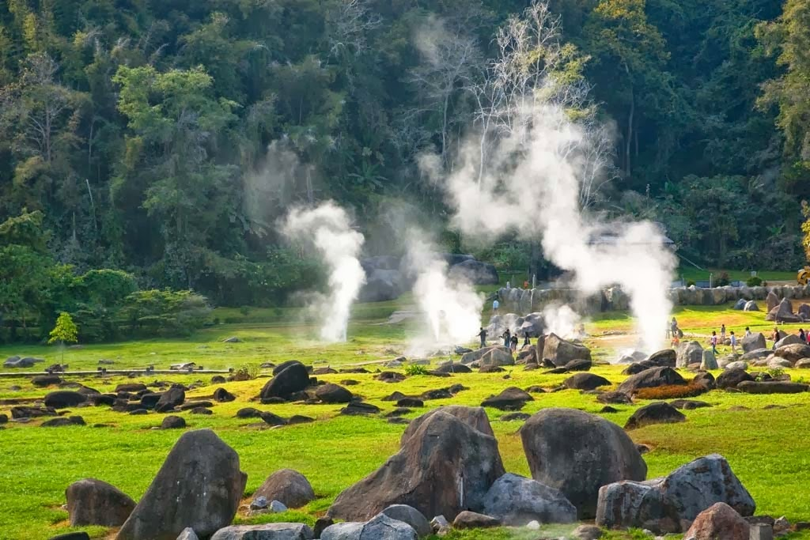 alt="" />
บ่อน้ำพุร้อนฝาง
อุทยานแห่งชาติดอยผ้าห่มปก ซึ่งมีความอุดมสมบูรณ์ทางธรรมชาติมาก บ่อน้ำพุร้อนมีมากกว่า 50 บ่อ
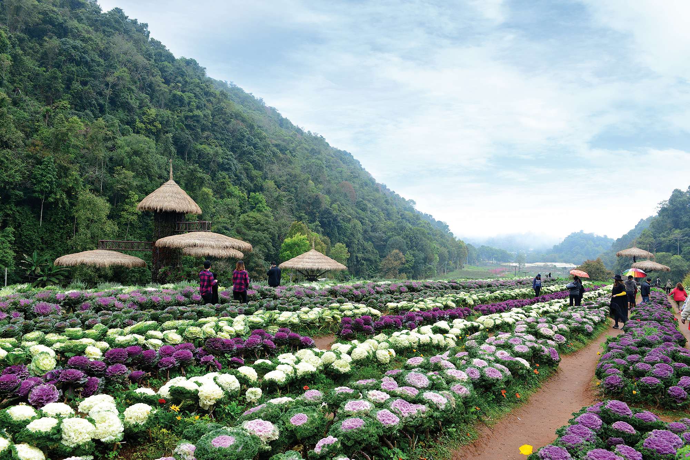alt="" />
ดอยอ่างขาง
ดอยอ่างขาง ตั้งอยู่บนทิวเขาแดนลาว ตำบลแม่งอน อำเภอฝาง จังหวัดเชียงใหม่
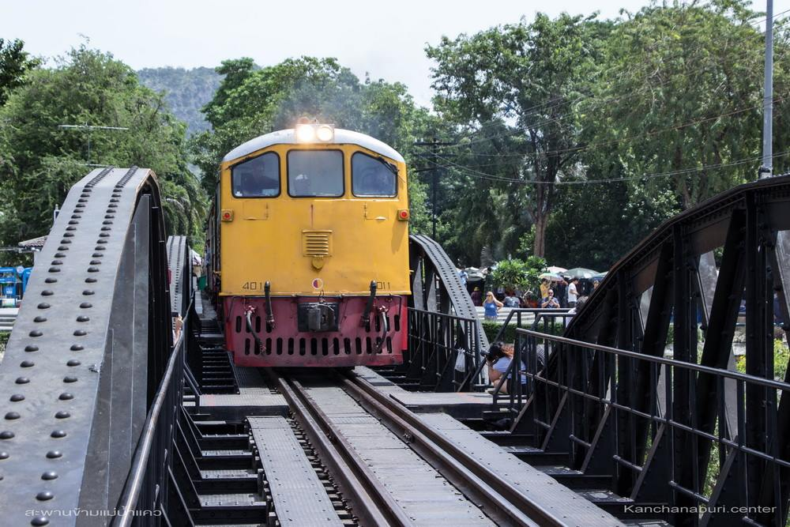alt="" />
สะพานข้ามแม่น้ำแคว
สะพานข้ามแม่น้ำแคว เป็นสะพานข้ามแม่น้ำแควใหญ่โครงสร้างเหล็กครึ่งวงกลม สลับโครงสร้างถัก ตอม่อคอนกรีตเสริมเหล็ก ตั้งอยู่ที่ตำบลท่ามะขาม อำเภอเมืองกาญจนบุรี จังหวัดกาญจนบุรี
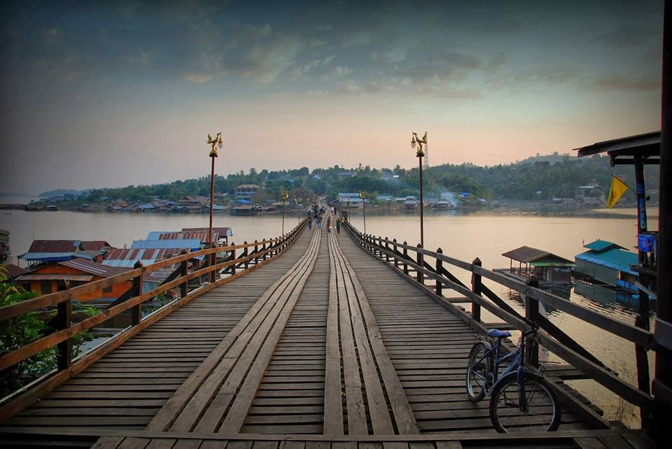alt="" />
สะพานมอญ
ป็นสะพานไม้ข้ามแม่น้ำซองกาเลียไปยังหมู่บ้านมอญ และยังถือว่าเป็นสะพานไม้ที่ยาวที่สุดในประเทศไทย
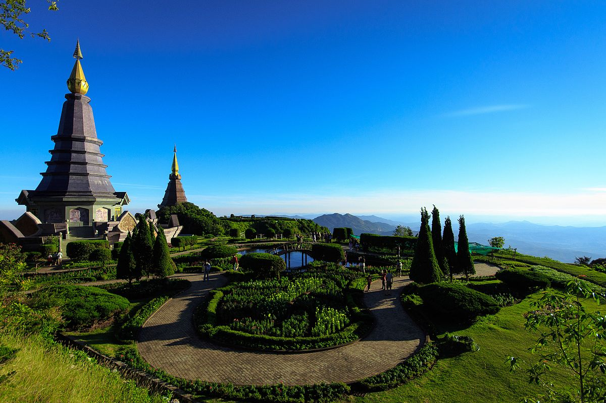alt="" />
“ดอยอินทนนท์
ดอยอินทนนท์ เป็นยอดเขาที่สูงที่สุดในประเทศไทย ตั้งอยู่ที่อำเภอจอมทอง จังหวัดเชียงใหม่ เดิมมีชื่อว่า "ดอยหลวง"
{kind=link}
{kind=link}
{kind=link}
{kind=link}
{kind=link}
{kind=link}
{kind=link}
{kind=link}
{kind=link}
{kind=link}
{kind=link}
{kind=link}